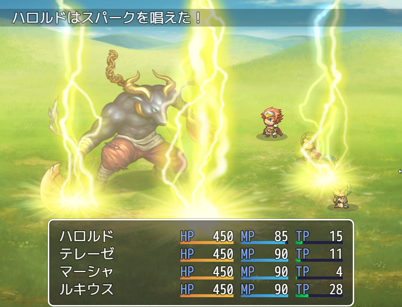

サイドビュー戦闘
前作までのフロントビュー戦闘に加え、新たにサイドビュー戦闘が可能になりました。

サイドビューモードのための設定項目
サイドビュー戦闘が可能になったことにより戦闘画面にアクターが表示され、 画像やモーションなど設定する項目が追加されました。
- システム［サイドビュー戦闘を使用］
- この項目をONにするとゲーム内の戦闘がサイドビューモードになります。
詳細はデータベース［システムの設定］の項目をご覧ください。 - システム［魔法スキル］
- 詠唱モーションが必要なスキルタイプを設定します。
詳細はデータベース［システムの設定］の項目をご覧ください。 - システム［攻撃モーション］
- 攻撃時のモーションをタイプ毎に設定します。
詳細はデータベース［システムの設定］の項目をご覧ください。 - アクター［戦闘キャラ］
- 戦闘時に表示されるアクターの画像を設定します。
詳細はデータベース［アクターの設定］の項目をご覧ください。 - ステート［モーション］
- アクターの状態に合わせて表示されるモーションを設定します。
詳細はデータベース［ステートの設定］の項目をご覧ください。 - ステート［重ね合わせ］
- アクターの状態に合わせてアクターの画像に重ねる画像を設定します。
詳細はデータベース［ステートの設定］の項目をご覧ください。